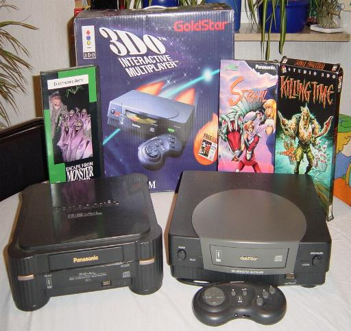

Spécifications système de la 3DO de Panasonic.

Graphics Graphics
--------- animation animation
| 3DO | processor processor
| block | |32|____________|32|
|diagram| |________ ________|
M --------- |32|
o _____|__|_____
n __ Video _______ 1MB ______| |____ 2MB
i __ processor_______ VRAM __32__| |_32_ DRAM
t | |
o | |
r | DMA |____ Expansion __ CDROM
| controller |_32_ Port Control __ Drive
| |
A | |___ Control __ Control pad
u__ D/A __ Digital ______| |_8_ Port __ 3d goggles
d__ Converter __ Signal __16__|____________| keyboard
i Processor |32|
o ______________________| |
| ______ _________ |
|32| |32| |32|
Optional Video 32-bit RISC _____ Math Co- ___ ROM &
Video --> Video Decomp Processor _____ Processor ___ SRAM
Input Port/plug
Spécifications:
- 32-bit 12.5Mhz RISC CPU (ARM60) crée par Advanced RISC Machines (ARM) (équivalent à un 68030 cadencé à 25Mhz)
- Résolution 640x480 pixels à 16.7 millions de couleurs
- Deux co-processeurs vidéo accélérés dont les principales fonctions sont:
- Fréquence d'horloge de 25Mhz.
- Capable de produire de 9 à 16 millions de pixels réels par secondes (36 à 64 Mpixels/seconde interpolés), tordus, agrandis, tournés et mappés textures.
- Capable de mapper une bitmap rectangulaire dans un polygone quelconque à 4 point.
- Les sources bitmap pour textures peuvent être de 1,2,4,6,8, ou 16 bits par pixels et sont compressés avec l'algorithme RLE
pour un excellent compromis entre une haute résolution et un faible espace de stockage.
- Support de la transparence, translucidité, et les effets d'ombrage de couleurs.
- Processeur à signal digital (DSP) 16 bit amélioré dont les principales fonctions sont:
- Specifically designed for mixing, manipulating, and synthesizing CD
quality sound.
- Fréquence d'horloge de 25Mhz.
- Archictecture RISC pipeliné.
- Registres 16 bits.
- 17 canaux DMA 16 bits séparés vers et depuis la mémoire du système.
- Instruction SRAM embarquée et en registres mémoire.
- Triatement interne 20 bits.
- Capable d'un filtrage spécial pour créer des effets comme le son 3D.
- Bus séparés pour des mise à jour du rafrâichissement vidéo (VRAM est doublement supportée).
- Vitesse de Bus Super Rapide(Super Fast BUS Speed) (50 Megabytes par secondes).
- Co-processeur mathématique amélioré dessiné par NTG pour l'accélération des opétations sur les matrices à points fixés. (Note: Ce n'est *pas* l'ARM FPA).
- Lecteur CD-ROM avec les caractéristiques suivantes:
- Temps d'accès de 320ms.
- Transfert de donnée double vitesse 300kbps.
- Buffer de RAM à 32kbytes.
- 2 Mo de DRAM
- 1 Mo de VRAM (également capable de stocker/exécuter du code et des données).
- 1 Mo de ROM
- 36 canaux DMA séparés pour un traitement rapide des données et une utilisation des bus efficaces.
- 2 ports d'expensions:
- 1 port High-speed 68 pins x 1 AV Entrée/Sortie (pour les cartouches FMV)
- 1 port High-speed 30 pins x 1 expension Entrée/Sortie.
- 1 port de contrôle, capable 1 Control port, capable de la connexion en série jusqu'à 8 périphériques.
- Système d'exploitation 32 bits multitâche.
- Son stéro 16 bits.
- Fréquence d'échantillonnage sonore de 44.1KHz.
- Supports complet du son Dolby(tm) Surround.
- SRAM 32kb sauvegardée par batterie.
- Extensible.